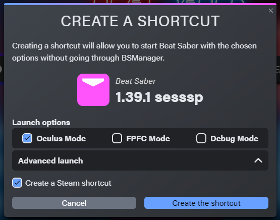
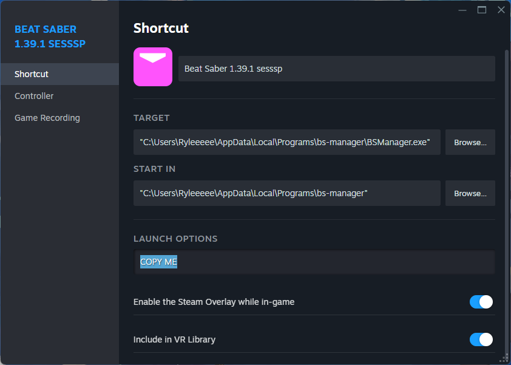
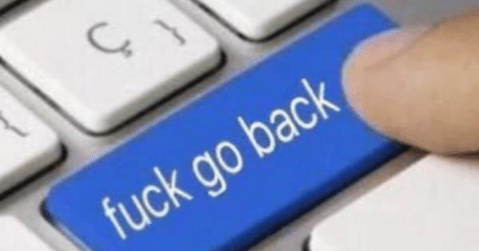

FuckASW™
Disable ASW and launch Beat Saber
How to use
- Download BSManager and install your favorite version of Beat Saber
- Download FuckASW.bat
- Create a shortcut using the gear icon on the top right
Make sure to tick "Create a Steam shortcut"

- Open Steam and copy the launch options from the shortcut you just made

If you don't see the new shortcut, try restarting Steam
- Right click "FuckASW.bat" and hit Edit
- Paste the launch options in place of "PASTE HERE" (without removing the quotation marks)
- Save the file and close it
- Open "FuckASW.bat" and there you go :3
